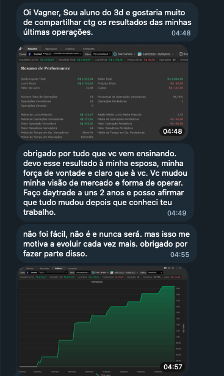

Acervo estratégico Vagner Mayer
Acervo estratégico Vagner Mayer
O mercado profissional não
opera apenas gráficos.
Ele precifica liquidez, juros, fluxo e risco global.
Uma seleção estratégica de aulas construídas ao longo de mais de 5 anos de treinamentos, conectando macroeconomia, tesouraria, hedge, derivativos, dólar, índice, arbitragem, volatilidade e precificação institucional.
Comprar


A dor do mercado
O mercado não quebra pessoas pela falta de vontade.
Costuma quebrar pela falta de estrutura.
Dentro do acesso
Mais de 50 aulas construídas dentro do mercado. Não em estúdio.
São aulas reais, discussões ao vivo, perguntas respondidas em tempo real
e análises feitas dentro do mercado.
Curso 01
3D - As 3 Dimensões do Mercado
Análise gráfica baseada em frequência, estrutura racional de preço, liquidez, Tape Reading básico e introdução macroeconômica para operar com leitura mais clara do mercado.
Curso 02
Mapa do Mercado
Hedge, derivativos, cupom cambial, arbitragem, volatilidade, dólar, índice futuro e precificação institucional conectados em uma visão prática de mercado.
Curso 03
5D - As 5 Dimensões do Mercado
Fundamentos aplicados, correlação entre ativos, expansão institucional, fluxo e comportamento macro para entender o que movimenta o preço antes da execução.
O diferencial
Enquanto muitos aprendem indicadores, você desenvolve leitura de mercado.
Juros alteram fluxo. Fluxo altera moedas. Moedas alteram inflação. Inflação altera política monetária. E tudo isso impacta diretamente o comportamento dos ativos.

Vagner Mayer
Mais de 10 anos formando visão de mercado além da análise convencional.
Especialista em leitura macroeconômica e estruturas operacionais de mercado, com atuação focada em fluxo institucional, derivativos, hedge, arbitragem e precificação de ativos.
Depoimentos
Não precisa acreditar em mim.
Veja relatos e registros reais de alunos que acompanham a metodologia do Vagner Mayer.

Resultado aplicado
Relatos mostram mudança de visão, processo e disciplina para operar com mais clareza.
Oferta final
Leitura de mercado que dá estrutura.
Tudo para revisar as aulas estratégicas do Vagner Mayer e enxergar liquidez, juros, fluxo e risco global com mais profundidade.
- Aulas selecionadas do 3D
- Aulas selecionadas do 5D
- Aulas selecionadas do Mapa do Mercado
- Mais de 50 aulas ao vivo
- Acesso por 6 meses
- Comunidades WhatsApp e Telegram
- Suporte direto com Vagner e equipe
Ficou com alguma dúvida?
Confira as respostas mais frequentes ou fale com a equipe para entender se o acervo faz sentido para o seu momento.
Instagram@vagnermayerb3 E-mailcontato@vagnermayer.com.br
E-mailcontato@vagnermayer.com.br
 WhatsAppFale com a equipe comercial.
WhatsAppFale com a equipe comercial.
Para quem é o Acervo Institucional?
Para quem quer revisar aulas estratégicas do Vagner Mayer e evoluir a leitura de mercado com base em liquidez, juros, fluxo e risco global.
Quais cursos fazem parte do acesso?
3D, 5D e Mapa do Mercado, com aulas selecionadas e organizadas para revisão.
Por quanto tempo tenho acesso?
O acesso ao acervo é de 6 meses.
Como recebo os dados de acesso?
Após a confirmação, a equipe orienta o acesso aos materiais e comunidades.